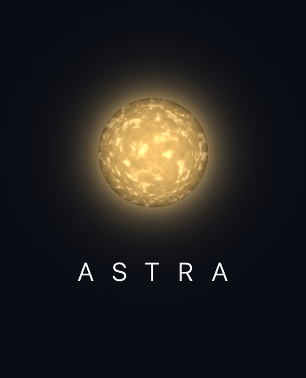

How do I unlock a star?
Mark every habit you're tracking as kept for that day. One completed day lights one star. Marking some but not all of them doesn't light a partial star, and no amount of extra effort on one day lights two.

Support
Astra is a habit tracker. Keep what you said you would for a day and it lights one star, taken from a catalogue of real ones, in the sky above where you started using it. Below are the questions that come up most. If yours isn't here, there's a link at the bottom.
Mark every habit you're tracking as kept for that day. One completed day lights one star. Marking some but not all of them doesn't light a partial star, and no amount of extra effort on one day lights two.
Nothing is taken away. Stars you've already lit stay lit, permanently. A missed day is a star you didn't light, and that's the whole of it.
Because a number that resets to zero punishes you at the exact moment you're most likely to give up. The Log tab shows your longest run instead, which is a record you've set rather than a thing you can break.
Constellations arrive nearest-first and smallest-first, so the early ones finish in a couple of days and the later ones take a couple of weeks. The order is fixed the first time you open the app, based on the sky where you were standing, and it doesn't change afterwards.
Yes. Positions, brightnesses and colours come from the Yale Bright Star Catalogue, and a star's colour on the map is worked out from its measured colour index. Where a distance is shown, it's one we trust; where the catalogue's parallax isn't reliable enough, Astra says nothing rather than printing a number that's wrong.
Five at once. The limit is deliberate: every habit you add is one more thing that has to be true before a day counts.
Open the menu on the Today tab and choose Manage habits. A habit you've never logged is deleted outright. One with history is archived instead, so the days you did keep it stay in the Log and the stars they earned stay in the sky.
Yes. Use the date strip at the top of the Today tab to go back and mark it. You can't mark a day from before you added the habit.
Menu on the Today tab, then Reminders. You pick the time, and one arrives a day. Nothing arrives on a day you've already finished.
Touch and hold an empty part of your Home Screen, tap Edit, then Add Widget, and search for Astra. The small size shows the day's count and the star waiting. The medium size lets you mark habits without opening the app.
iOS decides when widgets refresh, so it can lag by a few minutes. Opening Astra brings it up to date immediately.
On your device, and nowhere else. Astra has no account, no server and no networking of any kind. Nothing you record leaves the phone. See the privacy policy for the long version.
Delete the app. Everything it stored goes with it, and there's no copy anywhere for us to hold on to.
If you restore the new phone from a backup of the old one, yes. There's no sync, so two phones set up separately keep two separate skies.
Open an issue on GitHub. Tell me what you did, what you expected, and what happened instead. If it's a display problem, a screenshot helps more than anything.